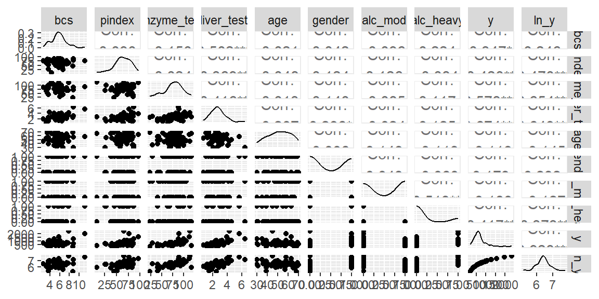
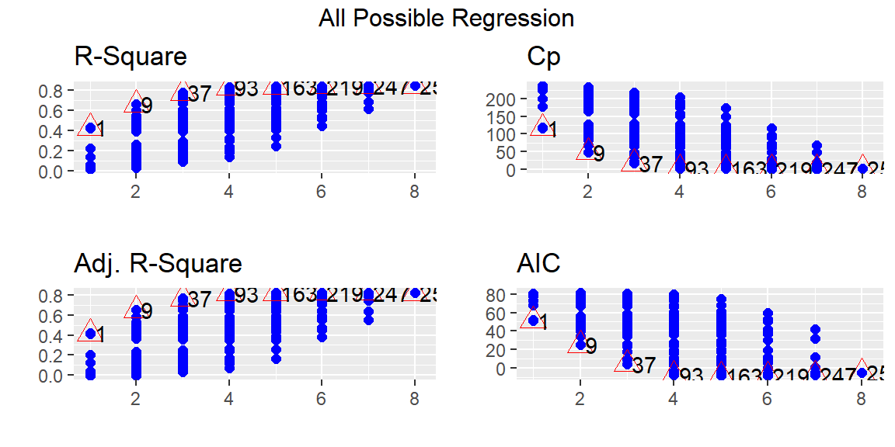
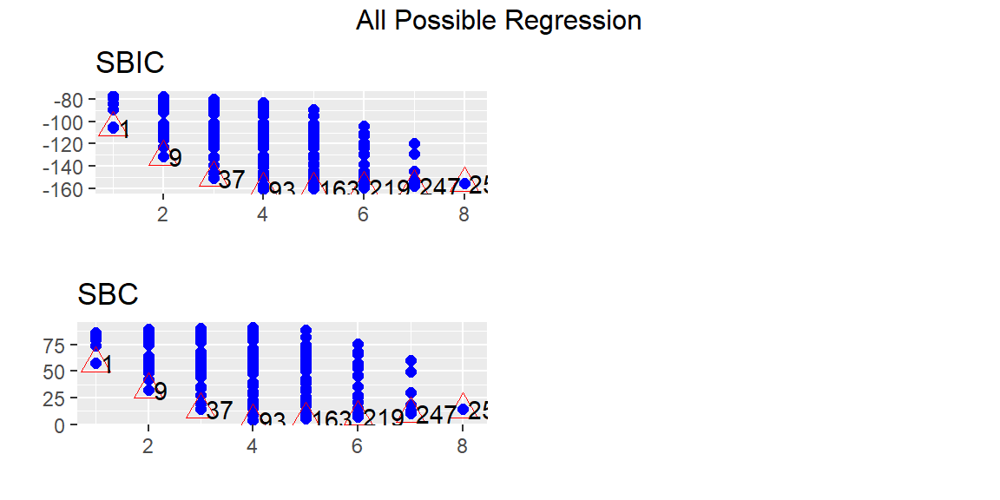
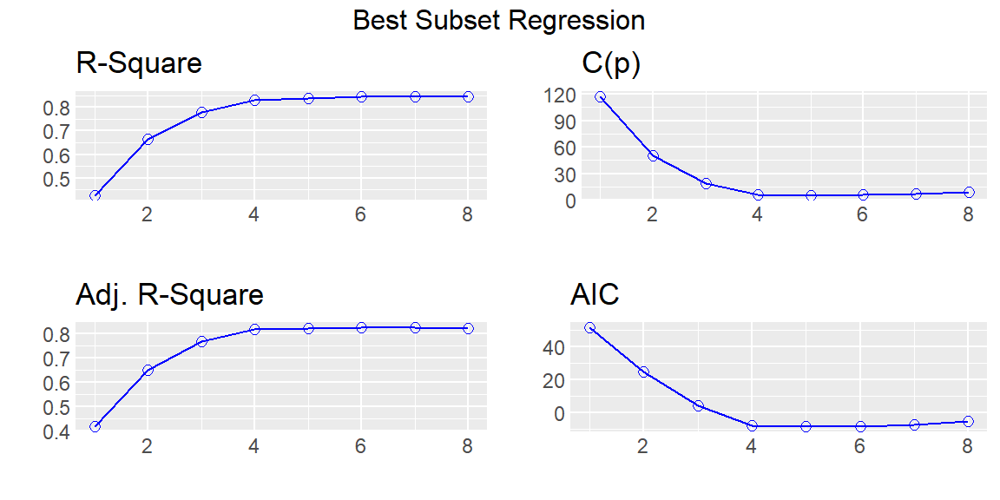
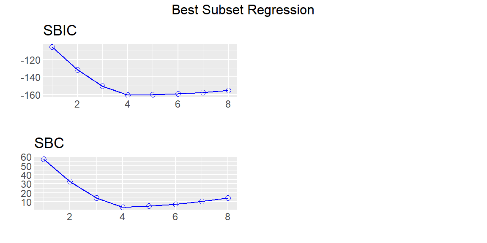

18 Stepwise and Best Subsets Regression
“Statistics cannot be any smarter than the people who use them. And in some cases, they can make smart people do dumb things.” - Charles Wheelan
We now discuss ways to determine a several potential subsets of predictor variables.
We start by discussing the criteria that could be used for comparing different models.
18.1 Best Subsets Procedure
As noted previously, the number of possible models, \[ 2^{p-1} \] grows rapidly with the number of predictors.
Evaluating all of the possible alternatives can be a daunting endeavor. However, for small \(p\) and a sample size that is not too large, we can fit all the possible models. From all of the models, we can pick a few models that are close in some criterion that we can examine further.
When the pool of potential predictor variables is very large, the “best” subset algorithms may require excessive computer time.
Under these conditions, one of the stepwise regression procedures, described next, may need to be employed to assist in the selection of predictor variables.
Example 18.1 (Surgical Unit data) The surgical unit data is available from the olsrr library. This library also has functions for conducting subsets regression.
This data is originally from Kutner[1]. It consists of data about survival of patients undergoing a liver operation. The response variable is number of days the patient survived after the operation. We will actually model the natural log of the survival time. The predictor variables are:
-
bcs: blood clotting score -
pindex: prognistic index -
enzyme_test: enzyme function test score -
liver_test: liver function test score -
age: age, in years -
gender: indicator variable for gender (0=male, 1=female) -
alc_mod: indicator variable for history of alcohol use (1=Moderate, 0=otherwise) -
alc_heavy: indicator variable for history of alcohol use (1=Heavy, 0=otherwise)
[1]: Kutner, M. H., Nachtsheim, C. J., Neter, J., & Li, W. (2004). Applied Linear Statistical Models McGraw-Hill/lrwin series operations and decision sciences.
The tidymodels library does not have functions to do subsets regression (we will use olsrr instead).
No obvious nonlinear relationships seen from the scatterplot matrix.
Let’s first fit all \(2^8=258\) models using the ols_step_all_possible function.
fit = lm(ln_y ~ bcs + pindex + enzyme_test + liver_test+
age + gender + alc_mod + alc_heavy, data = dat)
fits = ols_step_all_possible(fit)
plot(fits)

From these plots, we can determine a few models that may be of interest to us. Suppose that we want the model 93 which appears to be the best model with four predictors by all of the criteria. We can find this model in the subsets with the following code.
fits$result |>
filter(mindex == 93) mindex n predictors rsquare adjr rmse
1 93 4 bcs pindex enzyme_test alc_heavy 0.8299187 0.8160345 0.2008227
predrsq cp aic sbic sbc msep fpe apc
1 0.7862922 5.733992 -8.130569 -160.5329 3.803335 2.402982 0.04856033 0.2047918
hsp
1 0.0009259386If we want to just examine the best subset of predictors for each value of \(p\), then we can use the ols_step_best_subset function. This will return the criteria for only the best combination of predictors for each \(p\). The difference between ols_step_best_subset and ols_step_all_possible is that ols_step_all_possible does return every possible model whereas ols_step_best_subset returns only the best models.
subset = ols_step_best_subset(fit)
subset Best Subsets Regression
-----------------------------------------------------------------------------
Model Index Predictors
-----------------------------------------------------------------------------
1 enzyme_test
2 pindex enzyme_test
3 pindex enzyme_test alc_heavy
4 bcs pindex enzyme_test alc_heavy
5 bcs pindex enzyme_test gender alc_heavy
6 bcs pindex enzyme_test age gender alc_heavy
7 bcs pindex enzyme_test age gender alc_mod alc_heavy
8 bcs pindex enzyme_test liver_test age gender alc_mod alc_heavy
-----------------------------------------------------------------------------
Subsets Regression Summary
--------------------------------------------------------------------------------------------------------------------------------
Adj. Pred
Model R-Square R-Square R-Square C(p) AIC SBIC SBC MSEP FPE HSP APC
--------------------------------------------------------------------------------------------------------------------------------
1 0.4273 0.4162 0.3496 117.4783 51.4343 -105.4395 57.4013 7.6160 0.1463 0.0028 0.6168
2 0.6632 0.6500 0.6044 50.4918 24.7668 -131.5971 32.7228 4.5684 0.0893 0.0017 0.3765
3 0.7780 0.7647 0.7291 18.9015 4.2432 -150.4023 14.1881 3.0718 0.0610 0.0012 0.2575
4 0.8299 0.8160 0.7863 5.7340 -8.1306 -160.5329 3.8033 2.4030 0.0486 9e-04 0.2048
5 0.8375 0.8205 0.7828 5.5282 -8.5803 -160.2288 5.3426 2.3453 0.0482 9e-04 0.2032
6 0.8435 0.8235 0.7836 5.7725 -8.6129 -159.4064 7.2990 2.3077 0.0482 9e-04 0.2032
7 0.8460 0.8226 0.7807 7.0288 -7.4974 -157.6344 10.4035 2.3207 0.0492 0.0010 0.2076
8 0.8461 0.8187 0.7711 9.0000 -5.5320 -155.2573 14.3579 2.3719 0.0511 0.0010 0.2154
--------------------------------------------------------------------------------------------------------------------------------
AIC: Akaike Information Criteria
SBIC: Sawa's Bayesian Information Criteria
SBC: Schwarz Bayesian Criteria
MSEP: Estimated error of prediction, assuming multivariate normality
FPE: Final Prediction Error
HSP: Hocking's Sp
APC: Amemiya Prediction Criteria plot(subset)

This dataset does not take too long to run with all possible models. However, some datasets will have many more possible predictors and more observations. Using ols_step_all_possible will take too long. We can then use an automatic search method.
18.1.1 Choosing a Subset of Models
The best subsets regressions procedure leads to the identification of a small number of subsets that are “good” according to a specified criterion.
Sometimes, one may wish to consider more than one criterion in evaluating possible subsets of predictor variables.
Once the investigator has identified a few “good” subsets for intensive examination, a final choice of the model variables must be made.
This choice is aided by examining outliers, checking model assumptions, and by the investigator’s knowledge of the subject under study, and is finally confirmed through model validation studies.
18.2 Stepwise Regression Procedures
18.2.1 Stepwise Regression
In those occasional cases when the pool of potential predictor variables contains 30 to 40 or even more variables, use of a “best” subsets algorithm may not be feasible.
An automatic search procedure that develops the “best” subset of \(X\) variables sequentially may then be helpful.
The forward stepwise regression procedure is probably the most widely used of the automatic search methods.
It was developed to economize on computational efforts as compared with the various all-possible-regressions procedures. Essentially, this search method develops a sequence of regression models, at each step adding or deleting an \(X\) variable.
The criterion for adding or deleting an \(X\) variable can be stated equivalently in terms of error sum of squares reduction, \(t^*\) statistic, \(F^*\) statistic, AIC, or BIC.
18.2.2 Limitations of Stepwise Methods
An essential difference between stepwise procedures and the “best” subsets algorithm is that stepwise search procedures end with the identification of a single regression model as “best.”
With the “best” subsets algorithm, on the other hand. several regression models can be identified as “good” for final consideration.
The identification of a single regression model as “best” by the stepwise procedures is a major weakness of these procedures.
Experience has shown that each of the stepwise search procedures can sometimes err by identifying a suboptimal regression model as “best.”
In addition, the identification of a single regression model may hide the fact that several other regression models may also be “good.”
Finally, the “goodness” of a regression model can only be established by a thorough examination using a variety of diagnostics.
What then can we do on those occasions when the pool of potential \(X\) variables is very large and an automatic search procedure must be utilized? Basically, we should use the subset identified by the automatic search procedure as a starting point for searching for other “good” subsets.
One possibility is to treat the number of \(X\) variables in the regression model identified by the automatic search procedure as being about the right subset size and then use the “best” subsets procedure for subsets of this and nearby sizes.
18.2.3 Forward Stepwise Regression
We shall describe the forward stepwise regression search algorithm in terms of the AIC statistic.
-
The stepwise regression routine first fits a simple linear regression model for each of the \(P - 1\) potential \(X\) variables.
For each simple linear regression model, the AIC statistic is obtained.
The X variable with the smallest AIC is the candidate for first addition.
-
Assume \(x_7\) is the variable entered at step 1. The stepwise regression routine now fits all regression models with two \(X\) variables, where \(x_7\) is one of the pair.
For each such regression model, the AIC corresponding to the newly added predictor \(x_k\) is obtained.
The \(X\) variable with the smallest AIC is the candidate for addition at the second stage.
If the AIC is smaller than AIC for model in the previous step (in this case, the model with only \(x_7\)), then that variable is added to the model that already has \(x_7\). Otherwise, the program terminates.
-
Suppose \(x_3\) is added at the second stage. Now the stepwise regression routine examines whether any of the other \(X\) variables already in the model should be dropped.
For our illustration, there is at this stage only one other \(X\) variable in the model, \(x_7\). At later stages, there would be a number of variables in the model besides the one last added.
The variable with the largest AIC is the candidate for deletion. If this AIC exceeds the AIC for when the variable is not in the model, the variable is dropped from the model; otherwise, it is retained.
-
Suppose \(x_7\) is retained so that both \(x_3\) and \(x_7\) are now in the model.
The stepwise regression routine now examines which \(X\) variable is the next candidate for addition, then examines whether any of the variables already in the model should now be dropped, and so on until no further \(X\) variables can either be added or deleted, at which point the search terminates.
Note that the stepwise regression algorithm allows a predictor variable, brought into the model at an earlier stage, to be dropped subsequently if it is no longer helpful in conjunction with variables added at later stages.
18.2.4 Other Stepwise Procedures
Other stepwise procedures are available to find a ``best” subset of predictor variables. We mention two of these.
Forward Selection
The forward selection search procedure is a simplified version of forward stepwise regression, omitting the test whether a variable once entered into the model should be dropped.
Backward Elimination
The backward elimination search procedure is the opposite of forward selection.
It begins with the model containing all potential \(X\) variables and identifies the one with the largest AIC. If the maximum AIC is greater than the full model, that \(X\) variable is dropped.
The model with the remaining \(P - 2\) \(X\) variables is then fitted, and the next candidate for dropping is identified.
This process continues until no further \(X\) variables can be dropped.
A stepwise modification can also be adapted that allows variables eliminated earlier to be added later: this modification is called the backward stepwise regression procedure.
Example 18.2 (Example 18.1 revisted) Let use forward stepwise to find a model.
Stepwise Selection Method
-------------------------
Candidate Terms:
1. bcs
2. pindex
3. enzyme_test
4. liver_test
5. age
6. gender
7. alc_mod
8. alc_heavy
Step => 0
Model => ln_y ~ 1
AIC => 79.52928
Initiating stepwise selection...
Table: Adding New Variables
------------------------------------------------------------------------
Predictor DF AIC SBC SBIC R2 Adj. R2
------------------------------------------------------------------------
bcs 1 78.149 84.116 -79.601 0.06068 0.04261
pindex 1 68.040 74.007 -89.421 0.22104 0.20606
enzyme_test 1 51.434 57.401 -105.440 0.42725 0.41624
liver_test 1 51.977 57.944 -104.918 0.42146 0.41034
age 1 80.381 86.348 -77.426 0.02104 0.00221
gender 1 78.543 84.510 -79.217 0.05381 0.03561
alc_mod 1 80.651 86.617 -77.164 0.01614 -0.00278
alc_heavy 1 73.443 79.410 -84.178 0.13907 0.12252
------------------------------------------------------------------------
Step => 1
Added => enzyme_test
Model => ln_y ~ enzyme_test
AIC => 51.43434
Table: Adding New Variables
----------------------------------------------------------------------
Predictor DF AIC SBC SBIC R2 Adj. R2
----------------------------------------------------------------------
bcs 1 40.602 48.558 -116.889 0.54840 0.53069
pindex 1 24.767 32.723 -131.597 0.66318 0.64997
liver_test 1 34.156 42.112 -122.906 0.59921 0.58349
age 1 51.645 59.601 -106.490 0.44592 0.42419
gender 1 51.499 59.454 -106.628 0.44742 0.42575
alc_mod 1 52.947 60.903 -105.256 0.43240 0.41014
alc_heavy 1 44.323 52.279 -113.396 0.51618 0.49720
----------------------------------------------------------------------
Step => 2
Added => pindex
Model => ln_y ~ enzyme_test + pindex
AIC => 24.76682
Table: Removing Existing Variables
-----------------------------------------------------------------------
Predictor DF AIC SBC SBIC R2 Adj. R2
-----------------------------------------------------------------------
enzyme_test 1 68.040 74.007 -89.421 0.22104 0.20606
pindex 1 51.434 57.401 -105.440 0.42725 0.41624
-----------------------------------------------------------------------
Table: Adding New Variables
----------------------------------------------------------------------
Predictor DF AIC SBC SBIC R2 Adj. R2
----------------------------------------------------------------------
bcs 1 9.084 19.029 -146.190 0.75723 0.74267
liver_test 1 17.234 27.179 -139.017 0.71768 0.70074
age 1 24.663 34.608 -132.392 0.67605 0.65661
gender 1 25.727 35.672 -131.436 0.66960 0.64977
alc_mod 1 23.834 33.779 -133.135 0.68098 0.66184
alc_heavy 1 4.243 14.188 -150.402 0.77805 0.76473
----------------------------------------------------------------------
Step => 3
Added => alc_heavy
Model => ln_y ~ enzyme_test + pindex + alc_heavy
AIC => 4.24322
Table: Removing Existing Variables
-----------------------------------------------------------------------
Predictor DF AIC SBC SBIC R2 Adj. R2
-----------------------------------------------------------------------
enzyme_test 1 56.640 64.596 -101.751 0.39222 0.36839
pindex 1 44.323 52.279 -113.396 0.51618 0.49720
alc_heavy 1 24.767 32.723 -131.597 0.66318 0.64997
-----------------------------------------------------------------------
Table: Adding New Variables
----------------------------------------------------------------------
Predictor DF AIC SBC SBIC R2 Adj. R2
----------------------------------------------------------------------
bcs 1 -8.131 3.803 -160.533 0.82992 0.81603
liver_test 1 -3.424 8.510 -156.718 0.81443 0.79928
age 1 4.879 16.813 -149.876 0.78359 0.76592
gender 1 3.572 15.506 -150.963 0.78876 0.77152
alc_mod 1 5.783 17.717 -149.122 0.77993 0.76197
----------------------------------------------------------------------
Step => 4
Added => bcs
Model => ln_y ~ enzyme_test + pindex + alc_heavy + bcs
AIC => -8.13057
Table: Removing Existing Variables
-----------------------------------------------------------------------
Predictor DF AIC SBC SBIC R2 Adj. R2
-----------------------------------------------------------------------
enzyme_test 1 57.529 67.473 -102.187 0.40461 0.36888
pindex 1 36.524 46.468 -121.649 0.59647 0.57226
alc_heavy 1 9.084 19.029 -146.190 0.75723 0.74267
bcs 1 4.243 14.188 -150.402 0.77805 0.76473
-----------------------------------------------------------------------
Table: Adding New Variables
---------------------------------------------------------------------
Predictor DF AIC SBC SBIC R2 Adj. R2
---------------------------------------------------------------------
liver_test 1 -7.170 6.753 -159.155 0.83316 0.81578
age 1 -8.048 5.875 -159.824 0.83585 0.81875
gender 1 -8.580 5.343 -160.229 0.83746 0.82053
alc_mod 1 -6.689 7.234 -158.789 0.83167 0.81413
---------------------------------------------------------------------
Step => 5
Added => gender
Model => ln_y ~ enzyme_test + pindex + alc_heavy + bcs + gender
AIC => -8.58033
Table: Removing Existing Variables
-----------------------------------------------------------------------
Predictor DF AIC SBC SBIC R2 Adj. R2
-----------------------------------------------------------------------
enzyme_test 1 56.105 68.039 -104.732 0.44118 0.39556
pindex 1 35.768 47.702 -123.199 0.61655 0.58524
alc_heavy 1 10.176 22.110 -145.436 0.76128 0.74180
bcs 1 3.572 15.506 -150.963 0.78876 0.77152
gender 1 -8.131 3.803 -160.533 0.82992 0.81603
-----------------------------------------------------------------------
Table: Adding New Variables
---------------------------------------------------------------------
Predictor DF AIC SBC SBIC R2 Adj. R2
---------------------------------------------------------------------
liver_test 1 -7.005 8.907 -158.260 0.83873 0.81815
age 1 -8.613 7.299 -159.406 0.84347 0.82348
alc_mod 1 -7.151 8.761 -158.365 0.83917 0.81864
---------------------------------------------------------------------
Step => 6
Added => age
Model => ln_y ~ enzyme_test + pindex + alc_heavy + bcs + gender + age
AIC => -8.6129
Table: Removing Existing Variables
-----------------------------------------------------------------------
Predictor DF AIC SBC SBIC R2 Adj. R2
-----------------------------------------------------------------------
enzyme_test 1 57.529 71.452 -104.595 0.44711 0.38952
pindex 1 36.193 50.116 -123.610 0.62757 0.58878
alc_heavy 1 9.435 23.358 -146.113 0.77309 0.74946
bcs 1 4.113 18.035 -150.375 0.79439 0.77298
gender 1 -8.048 5.875 -159.824 0.83585 0.81875
age 1 -8.580 5.343 -160.229 0.83746 0.82053
-----------------------------------------------------------------------
Table: Adding New Variables
----------------------------------------------------------------------
Predictor DF AIC SBC SBIC R2 Adj. R2
----------------------------------------------------------------------
liver_test 1 -6.673 11.228 -157.087 0.84364 0.81985
alc_mod 1 -7.497 10.403 -157.634 0.84601 0.82258
----------------------------------------------------------------------
No more variables to be added or removed.
Variables Selected:
=> enzyme_test
=> pindex
=> alc_heavy
=> bcs
=> gender
=> age Let’s now use forward selection:
library(tidyverse)
library(olsrr)
forward_sel = ols_step_forward_aic(fit, details = TRUE)Forward Selection Method
------------------------
Candidate Terms:
1. bcs
2. pindex
3. enzyme_test
4. liver_test
5. age
6. gender
7. alc_mod
8. alc_heavy
Step => 0
Model => ln_y ~ 1
AIC => 79.52928
Initiating stepwise selection...
Table: Adding New Variables
------------------------------------------------------------------------
Predictor DF AIC SBC SBIC R2 Adj. R2
------------------------------------------------------------------------
enzyme_test 1 51.434 57.401 -105.440 0.42725 0.41624
liver_test 1 51.977 57.944 -104.918 0.42146 0.41034
pindex 1 68.040 74.007 -89.421 0.22104 0.20606
alc_heavy 1 73.443 79.410 -84.178 0.13907 0.12252
bcs 1 78.149 84.116 -79.601 0.06068 0.04261
gender 1 78.543 84.510 -79.217 0.05381 0.03561
age 1 80.381 86.348 -77.426 0.02104 0.00221
alc_mod 1 80.651 86.617 -77.164 0.01614 -0.00278
------------------------------------------------------------------------
Step => 1
Added => enzyme_test
Model => ln_y ~ enzyme_test
AIC => 51.43434
Table: Adding New Variables
----------------------------------------------------------------------
Predictor DF AIC SBC SBIC R2 Adj. R2
----------------------------------------------------------------------
pindex 1 24.767 32.723 -131.597 0.66318 0.64997
liver_test 1 34.156 42.112 -122.906 0.59921 0.58349
bcs 1 40.602 48.558 -116.889 0.54840 0.53069
alc_heavy 1 44.323 52.279 -113.396 0.51618 0.49720
gender 1 51.499 59.454 -106.628 0.44742 0.42575
age 1 51.645 59.601 -106.490 0.44592 0.42419
alc_mod 1 52.947 60.903 -105.256 0.43240 0.41014
----------------------------------------------------------------------
Step => 2
Added => pindex
Model => ln_y ~ enzyme_test + pindex
AIC => 24.76682
Table: Adding New Variables
----------------------------------------------------------------------
Predictor DF AIC SBC SBIC R2 Adj. R2
----------------------------------------------------------------------
alc_heavy 1 4.243 14.188 -150.402 0.77805 0.76473
bcs 1 9.084 19.029 -146.190 0.75723 0.74267
liver_test 1 17.234 27.179 -139.017 0.71768 0.70074
alc_mod 1 23.834 33.779 -133.135 0.68098 0.66184
age 1 24.663 34.608 -132.392 0.67605 0.65661
gender 1 25.727 35.672 -131.436 0.66960 0.64977
----------------------------------------------------------------------
Step => 3
Added => alc_heavy
Model => ln_y ~ enzyme_test + pindex + alc_heavy
AIC => 4.24322
Table: Adding New Variables
----------------------------------------------------------------------
Predictor DF AIC SBC SBIC R2 Adj. R2
----------------------------------------------------------------------
bcs 1 -8.131 3.803 -160.533 0.82992 0.81603
liver_test 1 -3.424 8.510 -156.718 0.81443 0.79928
gender 1 3.572 15.506 -150.963 0.78876 0.77152
age 1 4.879 16.813 -149.876 0.78359 0.76592
alc_mod 1 5.783 17.717 -149.122 0.77993 0.76197
----------------------------------------------------------------------
Step => 4
Added => bcs
Model => ln_y ~ enzyme_test + pindex + alc_heavy + bcs
AIC => -8.13057
Table: Adding New Variables
---------------------------------------------------------------------
Predictor DF AIC SBC SBIC R2 Adj. R2
---------------------------------------------------------------------
gender 1 -8.580 5.343 -160.229 0.83746 0.82053
age 1 -8.048 5.875 -159.824 0.83585 0.81875
liver_test 1 -7.170 6.753 -159.155 0.83316 0.81578
alc_mod 1 -6.689 7.234 -158.789 0.83167 0.81413
---------------------------------------------------------------------
Step => 5
Added => gender
Model => ln_y ~ enzyme_test + pindex + alc_heavy + bcs + gender
AIC => -8.58033
Table: Adding New Variables
---------------------------------------------------------------------
Predictor DF AIC SBC SBIC R2 Adj. R2
---------------------------------------------------------------------
age 1 -8.613 7.299 -159.406 0.84347 0.82348
alc_mod 1 -7.151 8.761 -158.365 0.83917 0.81864
liver_test 1 -7.005 8.907 -158.260 0.83873 0.81815
---------------------------------------------------------------------
Step => 6
Added => age
Model => ln_y ~ enzyme_test + pindex + alc_heavy + bcs + gender + age
AIC => -8.6129
Table: Adding New Variables
----------------------------------------------------------------------
Predictor DF AIC SBC SBIC R2 Adj. R2
----------------------------------------------------------------------
alc_mod 1 -7.497 10.403 -157.634 0.84601 0.82258
liver_test 1 -6.673 11.228 -157.087 0.84364 0.81985
----------------------------------------------------------------------
No more variables to be added.
Variables Selected:
=> enzyme_test
=> pindex
=> alc_heavy
=> bcs
=> gender
=> age Notice that forward selection results in the same model as forward stepwise.
Let’s now try backward elimnation.
backward_elim = ols_step_backward_aic(fit, details = TRUE)Backward Elimination Method
---------------------------
Candidate Terms:
1. bcs
2. pindex
3. enzyme_test
4. liver_test
5. age
6. gender
7. alc_mod
8. alc_heavy
Step => 0
Model => ln_y ~ bcs + pindex + enzyme_test + liver_test + age + gender + alc_mod + alc_heavy
AIC => -5.531982
Initiating stepwise selection...
Table: Removing Existing Variables
-----------------------------------------------------------------------
Predictor DF AIC SBC SBIC R2 Adj. R2
-----------------------------------------------------------------------
liver_test 1 -7.497 10.403 -157.634 0.84601 0.82258
alc_mod 1 -6.673 11.228 -157.087 0.84364 0.81985
age 1 -5.552 12.349 -156.338 0.84036 0.81607
gender 1 -5.277 12.624 -156.153 0.83955 0.81513
bcs 1 0.557 18.458 -152.161 0.82124 0.79404
alc_heavy 1 11.736 29.637 -144.123 0.78012 0.74666
pindex 1 31.549 49.450 -128.735 0.68266 0.63437
enzyme_test 1 42.307 60.208 -119.857 0.61270 0.55377
-----------------------------------------------------------------------
Step => 1
Removed => liver_test
Model => ln_y ~ bcs + pindex + enzyme_test + age + gender + alc_mod + alc_heavy
AIC => -7.49739
Table: Removing Existing Variables
-----------------------------------------------------------------------
Predictor DF AIC SBC SBIC R2 Adj. R2
-----------------------------------------------------------------------
alc_mod 1 -8.613 7.299 -159.406 0.84347 0.82348
age 1 -7.151 8.761 -158.365 0.83917 0.81864
gender 1 -6.907 9.005 -158.191 0.83844 0.81782
bcs 1 5.410 21.322 -149.112 0.79705 0.77114
alc_heavy 1 9.739 25.651 -145.800 0.78011 0.75204
pindex 1 36.799 52.711 -123.805 0.63706 0.59073
enzyme_test 1 59.420 75.332 -104.025 0.44822 0.37779
-----------------------------------------------------------------------
Step => 2
Removed => alc_mod
Model => ln_y ~ bcs + pindex + enzyme_test + age + gender + alc_heavy
AIC => -8.6129
Table: Removing Existing Variables
-----------------------------------------------------------------------
Predictor DF AIC SBC SBIC R2 Adj. R2
-----------------------------------------------------------------------
age 1 -8.580 5.343 -160.229 0.83746 0.82053
gender 1 -8.048 5.875 -159.824 0.83585 0.81875
bcs 1 4.113 18.035 -150.375 0.79439 0.77298
alc_heavy 1 9.435 23.358 -146.113 0.77309 0.74946
pindex 1 36.193 50.116 -123.610 0.62757 0.58878
enzyme_test 1 57.529 71.452 -104.595 0.44711 0.38952
-----------------------------------------------------------------------
No more variables to be removed.
Variables Removed:
=> liver_test
=> alc_mod Note that olsrr does not provide the ability to do backward stepwise.